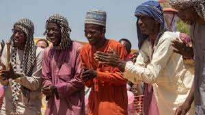

Características culturais
- Pastores nômades e semi-nômades
- Tradição de criação de gado (especialmente zebu)
- Língua: Fula (parte da família Fulani)
- Vestuário colorido e característico
Modo de vida
Os Fulani são conhecidos por sua mobilidade, passando de região em região com seus rebanhos, mantendo uma conexão profunda com a natureza.
História
Os Fulani (ou Fula) são um dos povos mais difundidos na África Ocidental, com história de pastorícia transumante que moldou rotas sociais e comerciais por séculos. A islamização de parte dos Fulani influenciou a formação de estados e redes de poder regionais. Na Guiné-Bissau, grupos Fulani contribuíram para a difusão de práticas islâmicas e para a economia baseada na criação de gado e trocas comerciais entre zonas rurais e urbanas.
Voltar ao Início